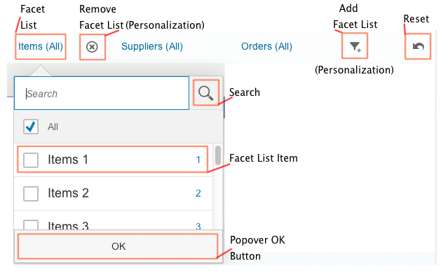

Facet Filter
Facet filters (sap.m.FacetFilter) support users in finding the information they need from potentially very large data sets.
With the facet filter, users can explore a data collection by applying multiple filters along certain discrete attributes or facets of the overall data collection.
The following figure shows the structure of the facet filter.
Example
Your application displays a large list of products that can be grouped by category and supplier. With the facet filter, you allow users to dynamically filter the list so it only displays products from the categories and suppliers they want to see. In the following figure, the FacetFilter control is outlined in red and will be referred to as the 'toolbar' for the user. In the example, the user has set the following filters:
-
Category: Printer
-
Supplier: Red Point Stores

The facet filter supports the following two typeswhich can be configures using the control's type property:
-
Simple type
The simple type is the default type and available for desktop and tablets.
-
Light type
The light type is automatically enabled on smart phone sized devices, but is also available for desktop and tablets.